平板
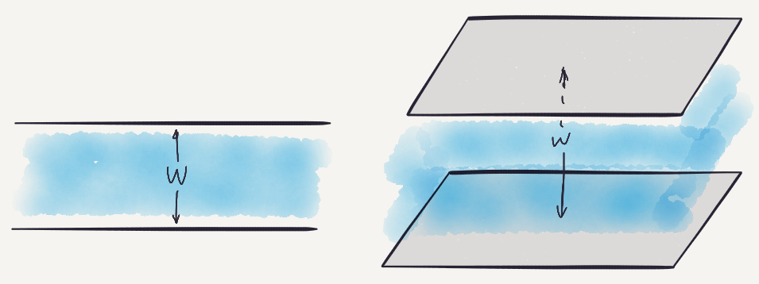宽度为 $w$ 平板是 $\mathbb{R}^d$ 中
落在距离相距 $w$ 的平行超平面之间的部分
Tarski 平板覆盖问题
$C$ 的宽度是覆盖 $C$ 的单个平板的最小宽度
若凸集 $C$ 被平板覆盖，则平板总宽度至少是 $C$ 的宽度
Alfred Tarski 于 1932 年证明了圆盘的情况
Thøger Bang 于 1950 年证明了凸集的情况
球带
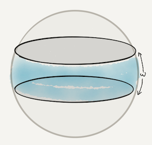宽度为 $\omega$ 的球带是单位球面上
距离某大圆至多 $\omega/2$ 的部分
Fejes Tóth 的球带猜想
覆盖球面的球带总宽度至少是 ... $\pi$
Research Problems: Exploring a Planet.
1973 年《美国数学月刊》
1972 Rosta: 三个等宽的球带
1974 Linhart: 四个等宽的球带
2016 Fodor, Vígh and Zarnócz:
若 100 个宽均为 $w$ 的球带覆盖球面，则 $w \ge 0.02032$


2017 J.–Polyanskii: 任意球带，任意维度
刻画取等条件
报告大纲
Tarski 平板覆盖问题的证明
Fejes Tóth 球带猜想的证明
Tarski 的证明
平面上覆盖圆盘球带的总宽度至少是直径
不妨设直径为 1

覆盖圆盘$\implies$ 覆盖半球面$\implies \sum \pi w_i / 2 \ge \pi / 2$
Tarski 的证明适用于
凸集 $C$ 的最大内接圆直径等于 $C$ 的宽度
但不适用于一般凸集，例如正三角形
Bang 的证明

 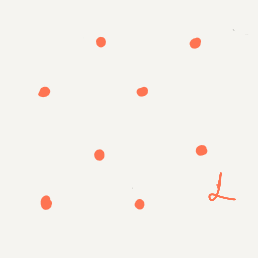
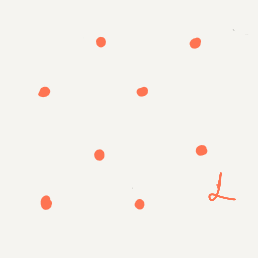$\vec{w}_i :=$ 代表平板 $i$ 的向量
$L := \{\pm \vec{w}_1 \pm \dots \pm \vec{w}_n\}$ = $\{\pm 1\}^n$ 的线性变换
想法 1: $L$ 不会被平板覆盖
想法 2: 若 $C$ 宽度够大，则可嵌入 $L$
Bognár 的证明
特殊情况: 所有平板以 O 为对称中心
 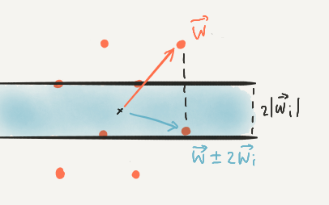
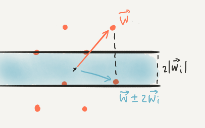断言: $L$ 中达到最大模长的向量 $\vec{w}$ 不被覆盖
$|\vec{w}| \ge |\vec{w} \pm 2\vec{w}_i| \implies w$ 不被平板 $i$ 覆盖
一般情况
$\vec{w} = \pm \vec{w}_1 \pm \dots \pm \vec{w}_n \in L$ 达到最大模长
$\Leftrightarrow$ $|\epsilon_1 \vec{w}_1 + \dots + \epsilon_n \vec{w}_n|^2$ 在 $\{\pm 1\}^n$ 中最大化
一般地，平板 $i$：$|\vec{v} \cdot \vec{w}_i$$+ b_i$$| \le |\vec{w}_i|^2$
最大化二次函数
$\sum \epsilon_i\epsilon_j (\vec{w}_i\cdot\vec{w}_j)$ $+\sum b_i\epsilon_i$
报告大纲
Tarski 平板覆盖问题的证明
Fejes Tóth 球带猜想的证明
Fejes Tóth 球带猜想

设向量 $\vec{w}_i$ 代表球带 $i$
Bang 说某 $\vec{w} = $$\epsilon_1$$\vec{w}_1 + \dots +$$\epsilon_n$$\vec{w}_n$ 没被平板覆盖
Bang 或 ... ？

若 $|\vec{w}| \le 1$，则 $\hat{w}$ 没被球带覆盖
否则，$\vec{w} = \vec{w}_1 + \dots + \vec{w}_n$ 模长大……
说不定可以合并球带！
何时可以合并？
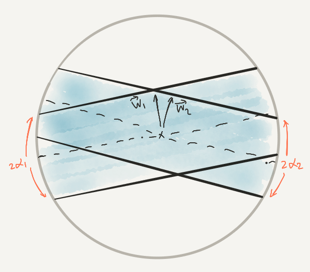$\angle(\vec{w}_1, \vec{w}_2) \le \alpha_1 + \alpha_2$
三角运算
$\angle(\vec{w}_1, \vec{w}_2) \le \alpha_1 + \alpha_2$
$\cos \angle(\vec{w}_1, \vec{w}_2) \ge \cos(\alpha_1 + \alpha_2)$
$|\vec{w}_1 + \vec{w}_2|^2 = |\vec{w}_1|^2 + 2|\vec{w}_1||\vec{w}_2|\cos\angle(\vec{w}_1, \vec{w}_2) + |\vec{w}_2|^2$
$\ge \sin^2\alpha_1 + 2\sin\alpha_1\sin\alpha_2\cos(\alpha_1 + \alpha_2) + \sin^2\alpha_2$
$= \dots = \sin(\alpha_1 + \alpha_2)^2$.
当 $|\vec{w}_1 + \vec{w}_2| \ge \sin(\alpha_1 + \alpha_2)$ 时，可以合并球带
汇总
一般地，当 $|\vec{w}_1 + \dots + \vec{w}_n| \ge \sin(\alpha_1 + \dots + \alpha_n)$ 时可以合并其中一些球带
反证法，假设总的半宽度 $\alpha_1 + \dots + \alpha_n < \pi / 2$
若 $|\vec{w}| \leq 1 $，则 $\hat{w}$ 没被球带覆盖
否则 $|\vec{w}| > 1 > \sin(\alpha_1 + \dots + \alpha_n)$，可以合并！
Goodman–Goodman 定理
若平面上半径为 $r_1, \dots, r_n$ 的 $n$ 个圆盘无法用直线分成两拨， 则圆盘可以用 $r_1 + \dots + r_n$ 的圆盘覆盖
想法：设圆盘圆心为 $\vec{x}_1, \dots, \vec{x}_n$，考虑圆心在 $r_1\vec{x}_1 + \dots + r_n\vec{x}_n$ 半径为 $r_1 + \dots + r_n$ 的圆盘
受此启发，用方向为 $\vec{w}$ 的球带去替代原有的球带
推论与未解决的问题
射影对偶
 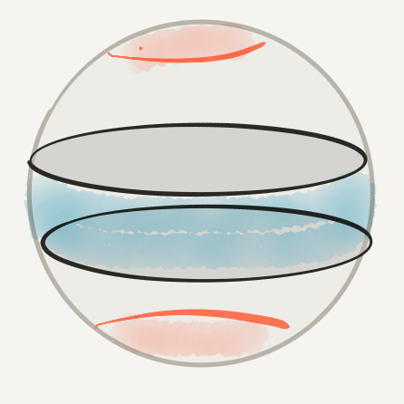
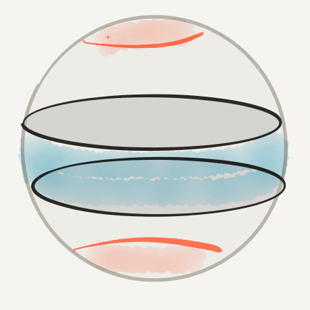大圆 $\leftrightarrow$ 对径点
球带 $\leftrightarrow$ 对径球冠
如果每个大圆都与某个球冠相交 ...
则球冠总半径至少是 $\pi/2$
球冠覆盖
覆盖半径为 $r$ 球冠的球带总宽度至少是...$2r$
 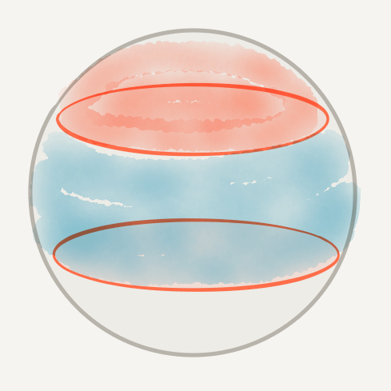
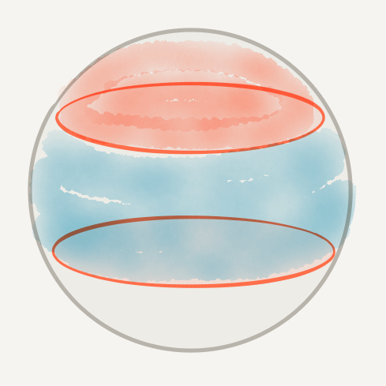Fejes Tóth 的猜想：覆盖球面凸区域 $D$ 的球带总宽度至少是 $D$ 的“宽度”
Bang 平板覆盖问题
从与平板垂直的方向，相对于 $C$ 测量平板的相对宽度
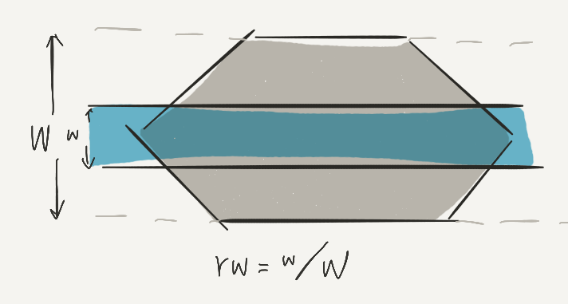猜想：覆盖凸集 $C$ 的平板总相对宽度至少为 $1$
Bezdek 环形覆盖问题
猜想：覆盖中心有洞圆盘的平板总宽度至少是直径
以色列理工学院
jiangzilin@technion.ac.il